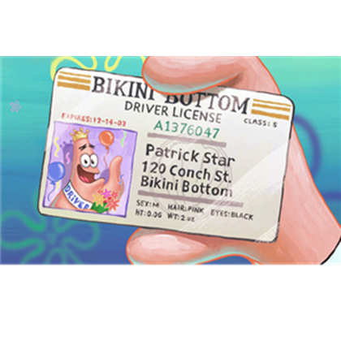
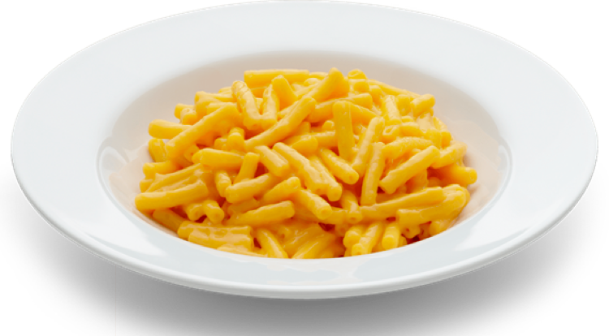
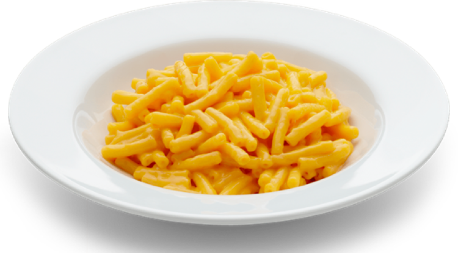
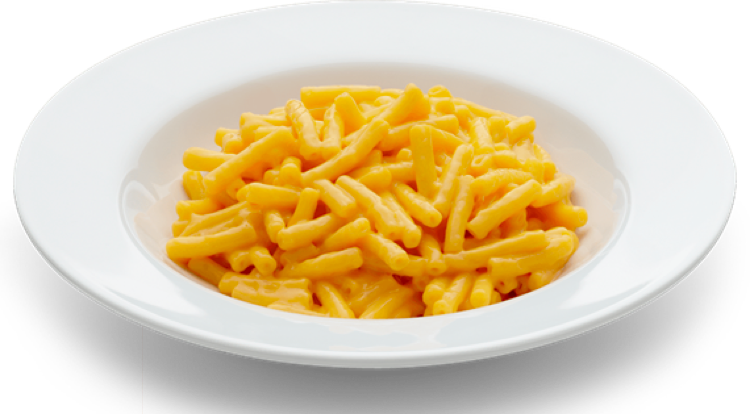

Kyle has just gotten his driving license and has been driving to school everyday for the past two weeks by himself. He is very tempted to fall asleep in the morning.
Kyle perfectly made some Kraft Mac and Cheese and continued to devour the cheesy delight.
For AP English with Mrs. Pasillas, Kyle had to read Narrative Of The Life of Frederick Douglass .


Something Awesome
At Damien, this week is Spirit Week and everyday there is a new activy or event in the senior quad. On Monday we had a "sumo-wrestling" game in which 2 people get into a sumo costume and fight.
On Tuesday, we had many circus games that students can participate in. On Wednesday, Damien had an inflatable obstacle course. Two students can race each other to the end of the obstacle course. On Thursday, the teachers had a "Faculty Basketball Game" and almost all thhe students came to watch. I have a homecoming rally this Friday at Damien Highschool in La Verne.
The junior class will for sure take the easy dub in the games. We will definitly not lose to those petty Freshmen.
 
